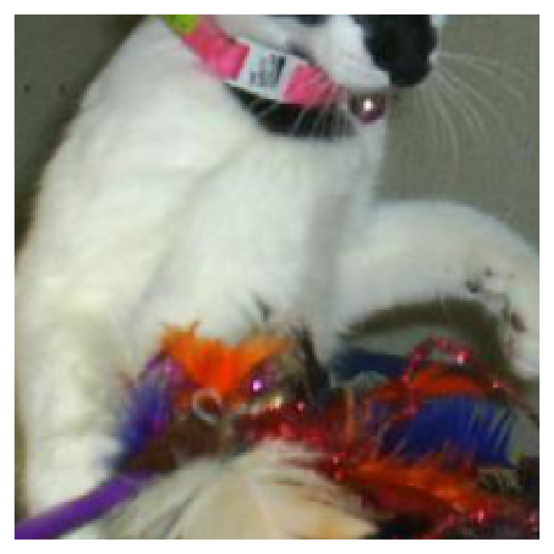
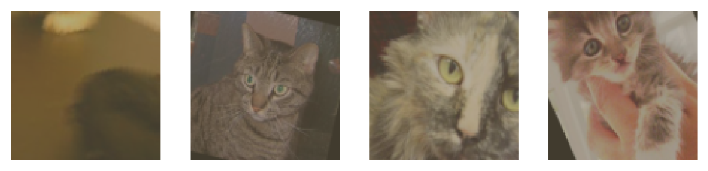

Part 7 - Loading Image Data
Table of Contents
Introduction
This is from Udacity's Deep Learning Repository which supports their Deep Learning Nanodegree.
So far we've been working with fairly artificial datasets that you wouldn't typically be using in real projects (28 x 28 pixels is very low resolution). Instead, you'll likely be dealing with full-sized images like you'd get from cameras. In this notebook, we'll look at how to load images and use them to train neural networks.
We'll be using a dataset of cat and dog photos available from Kaggle that was created to test whether a machine would be able to defeat the Asirra CAPTCHA system by identifying whether an image had a cat or a dog.
We'll use this dataset to train a neural network that can differentiate between cats and dogs. These days it doesn't seem like a big accomplishment, but five years ago it was a serious challenge for computer vision systems.
Set Up
Imports
PyPi
from torch import nn, optim
from torchvision import datasets, transforms
import matplotlib.pyplot as pyplot
import seaborn
import torch
Udacity Code
from nano.pytorch import helper
This Project
from neurotic.tangles.data_paths import DataPathTwo
from neurotic.models.fashion import (
DropoutModel,
train,
HyperParameters)
Plotting
get_python().run_line_magic('matplotlib', 'inline')
get_python().run_line_magic('config', "InlineBackend.figure_format = 'retina'")
seaborn.set(style="whitegrid",
rc={"axes.grid": False,
"font.family": ["sans-serif"],
"font.sans-serif": ["Latin Modern Sans", "Lato"],
"figure.figsize": (8, 6)},
font_scale=1)
The Data
The easiest way to load image data is with datasets.ImageFolder from torchvision. In general you'll use ImageFolder like so:
dataset = datasets.ImageFolder('path/to/data', transform=transforms)
where path/to/data is the file path to the data directory and transforms is a list of processing steps built with the transforms module from torchvision. ImageFolder expects the files and directories to be constructed like so:
root/dog/xxx.png root/dog/xxy.png root/dog/xxz.png root/cat/123.png root/cat/nsdf3.png root/cat/asd932_.png
where each class has it's own directory (cat and dog) for the images. The images are then labeled with the class taken from the directory name. So here, the image 123.png would be loaded with the class label cat. You can download the dataset already structured like this from here. I've also split it into a training set and test set (note that the data-set is almost 600 Megabytes so make sure you have broadband if you want to download it).
Transforms
When you load in the data with ImageFolder, you'll need to define some transforms. For example, the images are different sizes but we'll need them to all be the same size for training. You can either resize them with transforms.Resize() or crop with transforms.CenterCrop(), transforms.RandomResizedCrop(), etc. We'll also need to convert the images to PyTorch tensors with transforms.ToTensor(). Typically you'll combine these transforms into a pipeline with transforms.Compose(), which accepts a list of transforms and runs them in sequence. It looks something like this to scale, then crop, then convert to a tensor:
transforms = transforms.Compose([transforms.Resize(255),
transforms.CenterCrop(224),
transforms.ToTensor()])
There are plenty of transforms available, you should read through the documentation.
Data Loaders
With the ImageFolder loaded, you have to pass it to a DataLoader. The DataLoader takes a dataset (such as you would get from ImageFolder) and returns batches of images and the corresponding labels. You can set various parameters like the batch size and if the data is shuffled after each epoch.
dataloader = torch.utils.data.DataLoader(dataset, batch_size=32, shuffle=True)
Here dataloader is a generator. To get data out of it, you need to loop through it or convert it to an iterator and call next().
Looping through it, get a batch on each loop:
for images, labels in dataloader:
pass
# Get one batch
images, labels = next(iter(dataloader))
Actually Load the Data
Now we're going to actually do what we spoke of earlier.
Set the Path
This is where we set the folder path. The actual data-set was a zipped folder on an amazon web server so I downloaded it by hand instead of using the datasets method like we did with the earlier data sets.
train_path = DataPathTwo(folder_key="CAT_DOG_TRAIN")
Transform the Data
We're going to:
- resize the images (passing in a single number means it will match the smallest side (height or width))
- crop the images (CenterCrop means it measures from the center, and a single value makes it a square)
- convert the image to a tensor
transformations = transforms.Compose([transforms.Resize(255),
transforms.CenterCrop(224),
transforms.ToTensor()])
Load the Training Image Folder
training = datasets.ImageFolder(train_path.folder,
transform=transformations)
The ImageLoader couldn't handle the ~ in my path so I changed the DataPathTwo to expand it by default. Now we'll load the data into an iterator that hands out batches of 32 images.
training_batches = torch.utils.data.DataLoader(
training,
batch_size=32,
shuffle=True)
Now we can test the data loader.
images, labels = next(iter(training_batches))
plot = helper.imshow(images[0], normalize=False)

If it worked we should see something that looks like a dog or a cat in a square image.
Data Augmentation
A common strategy for training neural networks is to introduce randomness in the input data itself. For example, you can randomly rotate, mirror, scale, and/or crop your images during training. This will help your network generalize as it's seeing the same images but in different locations, with different sizes, in different orientations, etc.
To randomly rotate, scale and crop, then flip your images you would define your transforms like this:
train_transforms = transforms.Compose([transforms.RandomRotation(30),
transforms.RandomResizedCrop(100),
transforms.RandomHorizontalFlip(),
transforms.ToTensor(),
transforms.Normalize([0.5, 0.5, 0.5],
[0.5, 0.5, 0.5])])
You'll also typically want to normalize images with transforms.Normalize. You pass in a list of means and list of standard deviations, then the color channels are normalized like so
input[channel] = (input[channel] - mean[channel]) / std[channel]
Subtracting mean centers the data around zero and dividing by std squishes the values to be between -1 and 1. Normalizing helps keep the network work weights near zero which in turn makes backpropagation more stable. Without normalization, networks will tend to fail to learn.
You can find a list of all the available transforms here . When you're testing however, you'll want to use images that aren't altered (except you'll need to normalize the same way). So, for validation/test images, you'll typically just resize and crop.
The Training Transformations:
- RandomRotation: takes the maximum number of degrees to rotate the image
- RandomResizedCrop: scales and crops the image - we're only passing in the expected output size
- RandomHorizontalFlip: 50-50 chance that the image will be flipped horizontally.
means = deviations = [0.5, 0.5, 0.5]
train_transforms = transforms.Compose([transforms.RandomRotation(30),
transforms.RandomResizedCrop(100),
transforms.RandomHorizontalFlip(),
transforms.ToTensor(),
transforms.Normalize(means,
deviations)])
test_transforms = transforms.Compose([transforms.Resize(255),
transforms.CenterCrop(224),
transforms.ToTensor(),
transforms.Normalize(mean=means,
std=deviations)])
Now we create the testing and training data. Although I loaded the training data before, I didn't apply all the extra transforms so I'm going to re-load it
test_path = DataPathTwo(folder_key="CAT_DOG_TEST")
train_data = datasets.ImageFolder(train_path.folder, transform=train_transforms)
test_data = datasets.ImageFolder(test_path.folder, transform=test_transforms)
train_batches = torch.utils.data.DataLoader(train_data, batch_size=32)
test_batches = torch.utils.data.DataLoader(test_data, batch_size=32)
Here are the first four images in the training set after they were transformed.
images, labels = iter(train_batches).next()
fig, axes = pyplot.subplots(figsize=(10,4), ncols=4)
for index in range(4):
ax = axes[index]
helper.imshow(images[index], ax=ax)

At this point you should be able to load data for training and testing. Now, you should try building a network that can classify cats vs dogs. This is quite a bit more complicated than before with the MNIST and Fashion-MNIST datasets. To be honest, you probably won't get it to work with a fully-connected network, no matter how deep. These images have three color channels and at a higher resolution (so far you've seen 28x28 images which are tiny).
A Naive Dropout model
I'm just going to try and apply the Dropout Model from the FASHION-MNIST examples and see what happens. But, it turns out that the input shapes are wrong. Each image is a (3, 100, 100) tensor.
parameters = HyperParameters()
parameters.inputs = 3 * 100 * 100
parameters.outputs = 2
model = DropoutModel(parameters)
criterion = nn.NLLLoss()
optimizer = optim.Adam(model.parameters(), lr=HyperParameters.learning_rate)
outcomes = train(model=model,
optimizer=optimizer,
criterion=criterion,
train_batches=train_batches,
test_batches=test_batches)
Okay, this doesn't work, there's a mismatched size problem that I can't figure out. Maybe I'll come back to this.